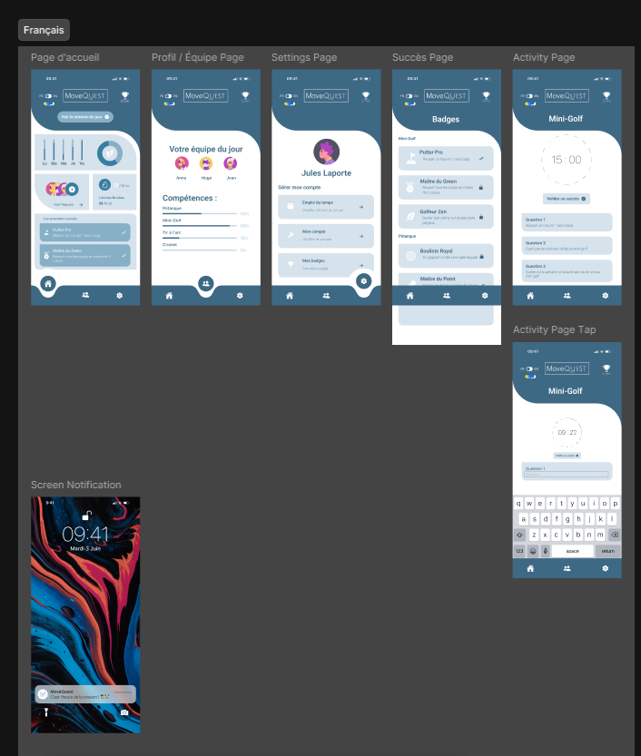
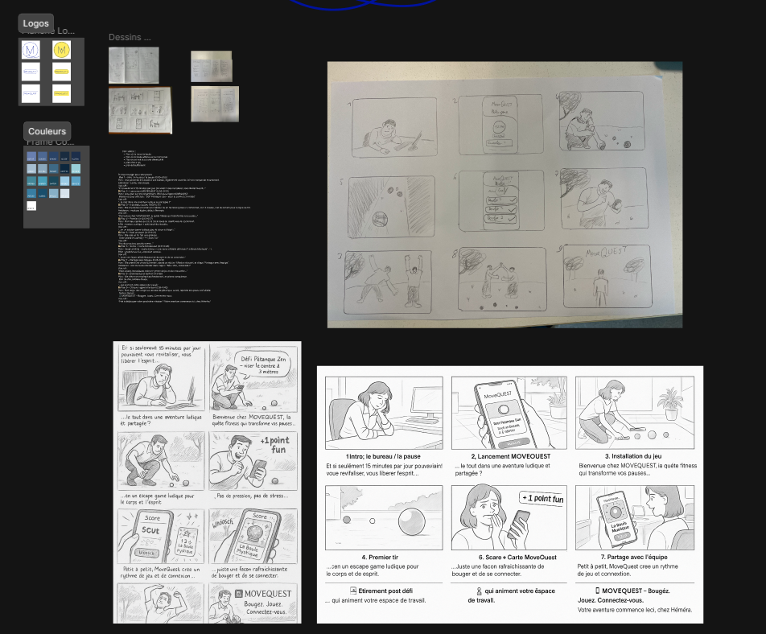

Application MoveQuest

But du projet
L'objectif principal de ce projet était de concevoir "MoveQuest", une application sportive exclusive pour les coworkers de l'espace Hemera. L'application vise à encourager l'activité physique, à faciliter l'organisation d'événements sportifs et à renforcer la cohésion au sein de la communauté des coworkers.
Voir le prototype fonctionnelMon explication et ma démarche
Ma mission s'est articulée autour de trois axes majeurs : la conception de l'application (UI/UX), la création de sa vidéo promotionnelle et la communication de lancement.
1. Conception UI/UX (Figma)
J'ai commencé par une phase de recherche pour définir les besoins des utilisateurs au sein d'Hemera (ateliers, sondages). Ensuite, sur Figma, j'ai développé les **wireframes** initiaux, puis les maquettes haute-fidélité. L'ensemble a été assemblé en un **prototype fonctionnel** et interactif, permettant de tester le parcours utilisateur de création et d'inscription à un événement sportif.
2. Promotion Vidéo (DaVinci Resolve)
Pour présenter le concept et générer de l'enthousiasme, j'ai réalisé une courte vidéo promotionnelle. J'ai d'abord créé un **storyboard** pour planifier les séquences, puis j'ai géré le tournage de plusieurs scènes de sport et d'interaction. Enfin, j'ai effectué le montage, l'étalonnage et le mixage audio dans DaVinci Resolve pour un rendu dynamique.
3. Communication & Lancement
En complément de la vidéo, j'ai rédigé un communiqué de presse ciblé pour la communication interne d'Hemera. Ce document annonçait officiellement le lancement de "MoveQuest", en soulignant les bénéfices pour la communauté et en guidant les utilisateurs pour leur première connexion.